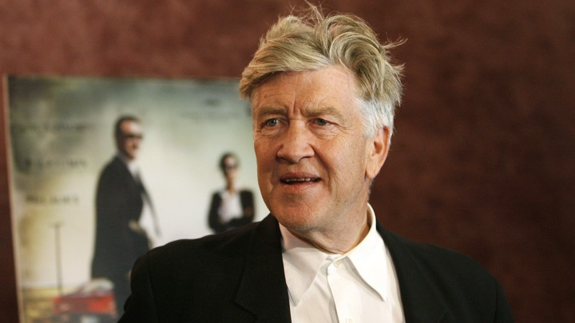

David Lynch
Extraordinary director

David Lynch at 2016
- 1946: Born to a middle-class family in Missoula, Montana.
- 1977: Produced his first motion picture, the surrealist horror film Eraserhead.
- 1980: After Eraserhead became a cult classic on the midnight movie circuit, Lynch was employed to direct a biographical film about a deformed man, Joseph Merrick, titled The Elephant Man, from which he gained mainstream success.
- 1984: David was then employed by the De Laurentiis Entertainment Group and proceeded to make film: the science-fiction epic Dune, which proved to be a critical and commercial failure
- 1986: Neo-noir crime film Blue Velvet, which stirred controversy over its violence but grew in critical reputation later on.
- 1990-1991: Lynch created his own television series with Mark Frost, the popular murder mystery Twin Peaks.
- 1992: Created a cinematic prequel, Twin Peaks: Fire Walk with Me.
- 1997: Turning further towards surrealist filmmaking, three of his subsequent films operated on "dream logic" non-linear narrative structures: the psychological thriller Lost Highway.
- 2001: The neo-noir "love story" Mulholland Drive.
- 2002: Lynch embraced the Internet as a medium, producing several web-based shows, such as the animated DumbLand and the surreal sitcom Rabbits.
- 2006: The fragmented mystery film Inland Empire.
- 2017: Lynch and Frost reunited for the Showtime limited series Twin Peaks: The Return, with Lynch co-writing and directing every episode.